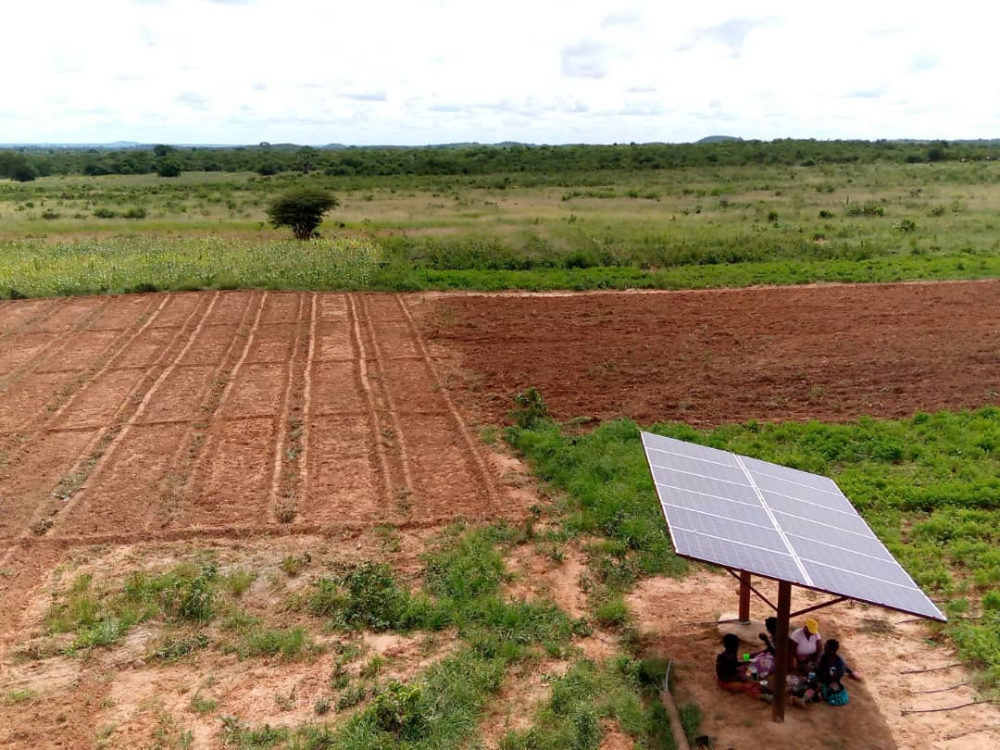

Water for Productive Use & Rural Economies
Africa is blessed with so much sun which needs to be harvested for use. This energy is clean and should be Africa's greatest source powering production for all sectors. We promote, facilitate and provides solar-powered water for productive use to develop rural economies, increase productivity, and improve livelihoods through sustainable income sources. Each system that we install have three minimum lines;
(a) for clean drinking water- promoting good health and hygiene
(b) irrigation- for food security
(c) livestock (troughs)- enhancing animal health and increasing household income especially for women.
Water should not just be for drinking but for productive use and a recipe to poverty eradication in rural communities. Each of these water systems is targeted at covering at least 1 to 2 Kilometres radius benefiting at least 3,000 people, 1,500 cattle and 3500 goats and at least 60 to 100 peasant farmers.

Women & Water Empowerment
We empower women with water for irrigation and the portions of land so that they can be productive, generate income and support their families throughout the year. Water plays an important role in their lives and changes live within a month. The programmes intended target is a minimum of $100 per women per month. We have seen women income raising from zero to more than $200 per month.

Food, Nutrition Security & Climate Change
Food is a fundamental right for families. Therefore, the production of nutritious food for families is key in child growth and also for people's health. With high stunting levels in Africa- water can be used to grow healthy foods without waiting for rain-fed agriculture. The solar-powered water systems and facilities provide water to the most affected people and regions with climate change. Many places in Africa are faced with deforestation and in the case of Zambia, agro-ecological zone I and II are the most hit. The solar water system is also used to plant trees for forestation. This helps in green energy and create forests for communities. This is great mitigation to issues of climate change- promotes sustainable livelihoods.
.png)
Research and Advocacy
We also believe in informed advocacy. This can only be with the body of research. The department of Research and Advocacy informs decision-makers at national, regional and international level on prudent management of water as a resource and provide the solution that benefits the poor and vulnerable. The department advocates for water transparency and accountability on its use and socio-economic benefit for communities in Africa.